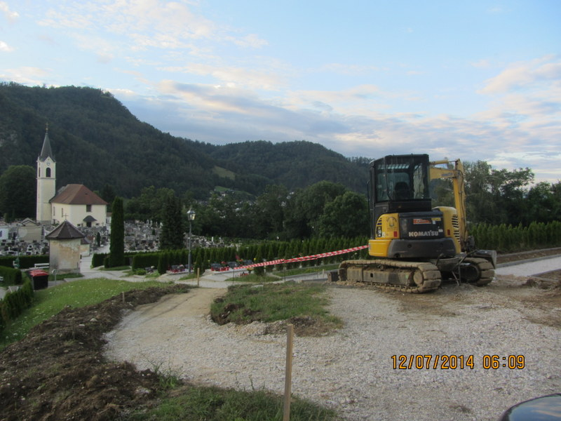

Welcome to Popravilo vodovoda
Vodovodne inštalacije | Mojster ekspres
2020.09.07 05:54
HIŠNI SERVIS - Ljubljana - Okolica Pokličite
041 663 019 Mojster ekspres, vaš klic naša skrb.
STORITVE
O nas Vodoinštalacije Pleskarska dela Keramičarstvo Električarska dela Gradbena dela Prevoz tovora Čiščenje prostorov KontaktVodoinštalacije - Ljubljana
Izvajamo Vodovodna Popravila
Dogovor za termin in ceno
Pokličite 041 663 019
Nujno Vodovodno Popravilo že isti dan
Intervencija za Nujna Vodovodna Popravila v Ljubljani
Vodovodne Storitve ki jih Opravljamo v Ljubljani in Okolici: Popravilo ali Zamenjava Vodovodne Pipe v Kuhinji in Kopalnici, Odmašitev in Čiščenje Odtoka za Vodo v Kuhinji ali Kopalnici v Ljubljani in Okolici, Popravilo Zamakanja v Kuhinji ali Kopalnici, M enjava Vodovodnih Ventilov Podometnih ali Nadometnih, Zamenjava ali Popravilo WC Kotlička Kotličkov, Hitro Popravilo Vgradnega wc Kotlička Geberit ali Liv, Menjava WC Školjke in WC Kotlička Ljubljana, Čiščenje Vodnega Kamna v WC Kotličku, Čiščenje ali Zamenjava Odtočnih Cevi v Kuhinji ali Kopalnici Ljubljana, Zamenjava Vodovodne Cevi ali Sifona za Pipo, Pritrditev Vodovodne Pipe na Lijak v Kuhinji ali Kopalnici, Zamenjava Pipe in Umivalnika v Kopalnici Ljubljana, Menjava Odtočne Cevi Sifona za Umivalnik ali za Kuhinjsko Korito, Zamenjava ali Popravilo Bojlerja v Kuhinji in Kopalnici Ljubljana, Popravilo Tuš Kabine v Kopalnici, Čiščenje in Odmaševanje Vodovodnih Odtokov v Kuhinji ali Kopalnici, Zamenjava Vodovodnih Cevi na Vseh Pipah in Bojlerjih v Ljubljani, Urgentno Odmaševanje in Čiščenje Odtočnih Cevi v Kuhinji ali Kopalnici, Popravilo ali Menjava Sifona od Kuhinjskega Korita ali Umivalnika, Popravilo ali Menjava Sifona od Umivalnika ali Sifona Kopalniške Kadi, Popravilo ali Zamenjava Kotnih Ventilov za Kuhinjske Pipe, Menjava Različnih Tesnil na Vodovodni Napeljavi v Stanovanju ali Hiši Ljubljana, Odklop ali Priklop Pralnega Stroja v Kopalnici, Odklop ali Priklop Pomivalnega Stroja v Kuhinji,,,
Popravilo Vgradnega wc Kotlička Geberit na območju Ljubljane, Servis Vgradnega WC Kotlička Grohe Liv ali Viega Ljubljana, Menjava in Popravilo Vodovodnih Pip v Kuhinjah in Kopalnicah, Popravila različnih Zamakanj, Menjava Podometnih ali Nadometnih Ventilov v Kuhinji in Kopalnici, Čiščenje ali Zamenjava Odtoka Sifona Lijaka v Kopalnici, Popravilo ali Menjava Bojlerja v Kuhinji ali v Kopalnici, Odmaševanje in Čiščenje Kuhinjskih in Kopalniških Odtokov v Ljubljani in Okolici,,,
Montaža Vodovodne Pipe v Kuhinji in Kopalnici, Montaža WC Kotlička in WC Školjke, Menjava in Montaža Umivalnika in Sifona, Montaža Sifona Lijaka v Kopalnici, Montaža in Popravilo Nadometnih in Podometnih WC Kotličkov v Ljubljani, Servis za Vgradni WC Kotliček Geberit in Liv v Ljubljana, Montaža in Čiščenje Odtočnih Cevi v Kuhinji ali Kopalnici, Urgenca za Odmaševanje in Čiščenje Talnega Odtoka za Vodo v Kopalnici, Popravilo in Odmaševanje Vodovodnih Odtokov v Kuhinji ali Kopalnici Ljubljana,,,
Naš Dežurni Vodovodar v Ljubljani Izvaja Dežurstva ob Sobotah, Nedeljah in Praznikih.
Če so vaše Težave pri Vodovodni Napeljavi sledeče:
Da Vaše Vodovodne Pipe Puščajo in Vam Delajo Stroške po nepotrebnem ker iz Vodovodne Pipe nenehno curlja, je to znak da določena Vodovodna Pipa vsebuje preveč Vodnega kamna v Vodovodnih kanalih Pipe ali v Vodovodnih Kotnih Ventilih ki dovajajo Vodo za Pipo. Naš Vodovodni Servis oziroma Vodoinštalater Vam bo Hitro Pritekel na Pomoč. Vašo določeno Vodovodno Pipo ali Ventil za Vodo bo Vodovodar Strokovno Pregledal in Izvedel Hitro Vodovodno Popravilo. Če Vodovodar oceni da Popravilo na Vodovodni Pipi ali Ventilu za Vodo ni mogoče izvesti bo Vodovodar v dogovoru z vami takoj Zamenjal z novimi. Dežurni Vodovodar bo Vaše Vodovodne Pipe Pregledal in po možnosti Popravil tudi ob Vikendih in Praznikih, po Potrebi Vodovodne Pipe ali Ventile za Vodo tudi Zamenjal z Novimi. Pogoste Vodovodne Težave se Pojavijo če je kdo v vaši bližini zapiral Glavni Vodovodni Ventil pri nekem Vodovodnem Popravilu in nato Hitro odprl ta Glavni Vodovodni Ventil obstaja možnost da vam na Mrežice Vodovodnih Pip priteče umazana Voda z peskom katero je potrebno Očistiti da ponovno Priteče Čista Voda iz Vodovodne Pipe. Stara Vodovodna Napeljava vsebuje veliko Vodnega Peska katerega Vodovodni Pritisk prinese na omenjene Mrežice Vodovodnih Pip. Vse navedeno Naš Vodovodar Pregleda in Popravi takoj na licu mesta in Vaše Vodovodne Pipe Bodo v hipu spet Brezhibno Delovale. Saj Vodne Pipe v Kuhinji in Kopalnici Vsak dan Nujno Potrebujete. Če Potrebujete Kvalitetno Vodoinštalaterstvo v Ljubljani pokličite nas in Vodovodar bo Hitro pri Vas. Ob Urgenci za Vodovodno Težavo in Hitrosti našega Vodovodarja v Ljubljani boste zadovoljni. Izvajamo tudi Intervencije za Vodovodna Popravila v Ljubljani in Okolici. Naš Vodovodni Servis dela vse dni v tednu in Izvaja Urgentna Intervencijska Popravila Vodovoda tudi ob vikendih. Za Dobro Vodovodarstvo so potrebne dolgoletne Vodovodarske Izkušnje, mi se lahko pohvalimo da že 23 let naše Vodovodarstvo uspešno deluje. Za Cene Vodovodnih Storitev izveste lahko po telefonu ali ob prihodu na objekt. Cene so odvisne od posamezne Vodovodne Storitve. Za Nujna Vodovodna Popravila naš Vodovodni Inštalater pride isti dan.
Pri Intervenciji za težavo na Vodovodni Inštalaciji je potrebno poslati zelo natančno lokacijo z naslovom.
Vodovodna Popravila ki jih Izvajamo v Ljubljani in Okolici:
Vodoinštalaterstvo Ljubljana: Sanacija Okvar na Vodovodni Inštalaciji oziroma vsa Vodovodna Popravila na Vodovodnem Omrežju, Popravilo Vodovodne Pipe v Kuhinji Ljubljana, Popravilo Zamakanja pri Odtoku Lijaka v Kuhinji ali Kopalnici, Nabava in Zamenjava Vodovodnih Pip Unitas, Blic, Grohe, Blanco, Montaža Nadometnega Kotlička v Ljubljani in Okolici, Dobava in Menjava Nadometnega WC Kotlička Geberit, Montaža WC Kotličkov in Dovodne Pletene Cevi ki povezuje Kotliček in Kotni Ventil, Menjava Dotočnega Ventila od WC Kotlička, Hitro Popravilo Nadometnega Geberit Kotlička Ljubljana, Popravilo Sanit Vgradnih Kotličkov, Urgentno Popravilo Vgradnih Geberit Kotličkov v Ljubljani, Servis za Vgradne wc Kotličke Geberit, Liv, Sanit, Grohe, Viega v Ljubljani. Hitra Montaža ali Popravilo Straniščnega Splakovalnika na območju Ljubljane in bližnje okolice, Zamenjava Posameznih Delov Vodovodne Pipe in WC Kotlička v Ljubljanski Regiji, Menjava Vodovodnega Kotnega Ventila in Pletene Cevi za WC Kotliček Ljubljana, Nabava in Montaža Nove Vodovodne Pipe za Kuhinjo in Kopalnico, Menjava Posameznih Delov od Vodovodnih Armatur v Kuhinji ali Kopalnici na območju Ljubljane, Hitra Menjava Vodovodnega Ventila Pipe, Popravilo Kotnega Ventila za Vodovodno Pipo, Nabava in Zamenjava Vodovodne Armature v Kuhinji, Popravilo Enoročne ali Dvoročne Kuhinjske Pipe Ljubljana, Popravilo ali Zamenjava Vrtne Pipe, Popravilo ali Zamenjava Pipe v Tuš Kabini ali na Kadi, Popravilo in Montaža Vodovodnih Pip v Bideju, Sanacija Vodovodnega Puščanja v Kuhinji ali v Kopalnici, Urgentno Vodovodar v Ljubljani, Nabava in Montaža Vodovodne Armature za Kopalnico v Ljubljani, Montaža Sifona Pomivalnega Korita ali Umivalnika, Montaža Odtočnh Cevi Sifonov za Enojna ali Dvojna Kuhinjska Korita v Ljubljani in Okolici, Odmašitev Odtočne Cevi Straniščne Školjke Ljubljana, Popravilo Puščanj pri Straniščni Školjki ali wc Splakovalniku na Območju Ljubljane in Okolice, Dežurna Služba za Vodovodne Težave v Ljubljani, Odmaševanje Sanitarnih Odtokov v Ljubljani, Popravilo Zamakanja pri Odtočnih Ceveh ali Sifonov v Kuhinji ali Kopalnici v Ljubljani, Izvajamo Intervencije za Vodovodne Težave ob Vikendih ali Praznikih v Ljubljani, Izrez Odprtine za Pipo na Pomivalnem Koritu v Kuhinji, Zamenjava Podpultnega ali Nadpultnega Kuhinjskega Grelnika Vode Gorenje, Demontaža stare in Montaža Nove Pipe v Kopalnici, Popravilo ali Zamenjava Pipe na Kadi Ljubljana, Montaža Kotnega Ventila v Kopalnici ali Kuhinji, Zamenjava Kombiniranega Vodovodnega Ventila, Hitra Menjava Vodovodne Pipe za Pralni Stroj v Ljubljani, Menjava Ekscentra Vodovodne Armature, Montaža Zidne Kuhinjske Armature v Ljubljani, Čiščenje Notranjih Kanalov Vodovodne Pipe Ljubljana, Montaža Ventila za Pralni ali Pomivalni Stroj na Ljubljanski regiji, Prezračevanje Radiatorja, Vodovodna Urgenca Ljubljana, Popravilo in Predelava Svinčenega Odtoka od Umivalnika, Nabava in Zamenjava Plastičnega ali Kovinskega Sifona za Umivalnik, Montaža Novega Enojnega ali Dvojnega Sifona za Kuhinjsko Korito, Dobava in Zamenjava rezervnih delov za Vgradni WC Kotliček Geberit ali Liv, Dobava in Zamenjava Pletenih Cevi za Vodovodno Pipo in Straniščni Splakovalnik Ljubljana, Urgenca in Servis za Vgradni Podometni Kotliček Sanit in Geberit v Ljubljani, Urgentna Menjava Dotočnega Ventila v Nadometnemu ali podometnemu wc Kotličku v Ljubljani, Zamenjava Posameznih Delov WC Kotlička v Stranišču Ljubljana, Zamenjava Različnih Umivalnikov v Kopalnici, Dobava in Zamenjava Vodovodne Pipe za Lijak, Dobava in Montaža Odtočnih Cevi za Kuhinjsko Korito in Umivalnik, Izvajamo Hitre Vodovodarske Storitve, Sanacija Vodovodnih Okvar v Ljubljani, Intervencija za Izliv Vode v Kopalnici ali Kuhinji na Ljubljanskem Območju, Popravilo ali Zamenjava Podometnega Sifona za Pralni Stroj Ljubljana, Različna Vodovodna Popravila v Kuhinji ali Kopalnici Ljubljana, Nujna oziroma Urgentna Vodovodarska Popravila Opravljamo prednostno, Popravilo Bojlerja Gorenje v Kopalnici Ljubljana, Zamenjava Pletene Cevi Bojlerja v Kopalnici in Kuhinji, Urgenca za Čiščenje Odtoka od Umivalnika Ljubljana, Odmaševanje Talnega Sifona v Kopalnici Ljubljana, Čiščenje Odtoka od Tuš Kabine ali Kadi Ljubljana, Priklop ali Odklop Pralnega Stroja Ljubljana, Intervencija za Vodovodno Napeljavo ob Poplavi Izlivu ali Zamakanju v Kopalnici Ljubljana, Hiter in Zanesljiv Vodovodar v Ljubljani, Urgentno Popravilo Zamakanja v Kuhinji Ljubljana, Popravilo Počene Vodovodne Cevi v Ljubljani in Okolici, Urgentni Vodovodar za Območje Ljubljane, Čiščenje Vodovodnih Sifonov v Stanovanju ali Hiši na Področju Ljubljane, Popravilo ali Zamenjava Tuš Slušalke in Vodne Cevi, Prenova Vodovoda in Vodovodnih Inštalacij Ljubljana. Opravljamo Nujna Vodovodarska opravila oziroma vse kar je vezano za Vodoinštalaterstvo v Ljubljani in Okolici. Izvajamo Intervencije za Vodovodne Težave v Ljubljani ob sobotah in nedeljah.
Zamašeni Odtoki v Kuhinji ali Kopalnici Ljubljana:
Vodovodni Odtok Vašega Pomivalnega Korita v Kuhinji ne Požira Vodo ob enem pa Povzroča še Zamakanje pod Lijakom , Polno Korito Vode Vas Spravlja v Obup. Poskusili ste Kuhinjski Odtok Odmašit in vam ne gre od rok. Poskusili ste še Očistiti Sifon Pomivalnega Korita pa vseeno Voda ne Odteka po Odtočni Cevi. Ugotovili ste da je Odtočna Cev od Korita Zamašena nekje v Steni in zato Voda ne Odteka pa še Zamaka pri Zidu. Za Odmašitev Odtoka nimate dovolj znanja ali Orodja. Veste da je Kuhinjski Odtok verjetno Zamašilo kakšni odpadki od zelenjave in maščobe in da Kuhinjski Odtok treba Temeljito Očistiti, Kuhinjski Odtok Nujno Potrebujete in Vas zanima kako Hitro dobiti Vodovodarja pa še to da je iz Ljubljane. Nič ne Skrbite samo Pokličite Nas in se bo Naš Vodovodar Hitro oglasil pri Vas. Naš Dežurni Vodovodar v Ljubljani bo Pregledal Vodovodni Odtok in Hitro Opravil Odmašitev in Čiščenje Odtoka Pomivalnega Korita in Voda bo spet Odtekala po Cevi kot nekoč pa še Zamakanja bo konec. Za Odmašitev Odtoka Sifona sploh ne bo potrebno Demontaža Cevi če je Zamašitev Sifona na začetku. Če se ugotovi da je Vodovodni Odtok Zamašen nekje v Zidu pa bo Vodovodar Odstranil Sifon Vodovodno Cev in Odmašil Odtok z Mašino za Odmaševanje Odtokov. Zamašen Odtok od Kuhinjskega Korita bo v hipu spet požiral Vodo brezhibno. Po Vaši želji Vodoinštalater lahko opravi Pregled in morebitno Odmašitev ali Čiščenje Odtoka tudi v Vaši Kopalnici. Dosti krat so Težave tudi z Zamašenim Talnim Sifonom Odtokom v Kopalnici, v Kopalnici se veliko Odtokov Združuje in posledično se kakšen Vodovodni Odtok Zamaši pa še lahko Zamaka sosedu pod vami, za to je smiselno če Naročite Vodovodarja za Odmašitev Kuhinjskega Odtoka da vam Pregleda še ostale Vodovodne Odtoke v Kopalnici če normalno Požirajo Odpadno Vodo. Vodovodni Odtoki v Kopalnici so tako Povezani da če pride do Zamašitve kakšnega od teh Odtokov lahko tudi WC Školjka ima Težave z Pretokom ali Pritiskom Vode. Če pride do Zamašene WC Školjke pa je v Kopalnici lahko zelo nerodna Poplava z Izlivom Fekalni Odpadkov skozi Talni Odtok Sifon v Kopalnici ali Stranišču in lahko Zamaka v Stanovanje pod vami. Naš Vodoinštalater bo če se izkaže Potreba za Odmašitev Čiščenje ali Zamenjava Sifona Umivalnika ali Kopalne Kadi tudi to Hitro Opravil. Odmaševanje Vodovodnih Odtokov v Kopalnici in Kuhinji Opravljamo na preprost in Naravni način. Odmašitev Kuhinjskega Odtoka naš Vodovodar Opravi na Hiter in enostaven Način. Odmašitev Kuhinjskih in Kopalniških Vodovodnih Odtokov v Ljubljani Opravimo Ročno ali Strojno. Nujne Vodovodne Težave na Vodovodni Napeljavi Odpravimo že isti dan na Področju Ljubljane. Čiščenje in Odmaševanje Kuhinjskih in Kopalniških Odtokov Opravljamo vse dni v tednu. Izvajamo Urgenco za Nujno Vodovodno Popravilo v Ljubljani. Pri Urgenciji za Vodovodno Težavo Prijazno Svetujemo v Slučaju Vodovodne Poplave v Kopalnici ali Kuhinji. Izvajamo tudi Intervencijsko Odmaševanje Odtokov v Kuhinji ali Kopalnici na Območju Ljubljane vse dni v tednu. Za Ceno Vodovodne Intervencije izveste v naprej. Skratka naš Vodovodar oziroma Vodovodni Servis Hitro Odpravi Težave vezane za Vodovod v Ljubljani in Okolici.
Hitro Odmaševanje in Čiščenje Odtokov v Kopalnici in Kuhinji Ljubljana, Vodovodar 041 663 019:
Vodovodni Odtoki ki ne Požirajo Vodo v Stanovanju ali Hiši znajo Narediti zelo nelagodno situacijo za vsakega stanovalca. Če na primer nismo pazljivi pri Čiščenju in Pripravi hrane sadja in zelenjave v Kuhinji, se lahko Hitro zgodi da se nam Zamaši Kuhinjski Odtok oziroma Odtočna Cev od Kuhinjskega Korita. Pri Pranju raznega sadja in zelenjave Manjši Ostanki zbežijo skozi Odprtino od Kuhinjskega Korita. Se Nalagajo počasi v Odtočni Cevi oziroma v Sifonu od Kuhinjskega Korita in čakajo naslednje Odpadke kot so Odpadno Olje, Kavni zos in še kaj. Po tem se počasi formira Zamašek v Sifonu od Kuhinjskega Korita ali pa naprej v kakšnem Odtočnem Kolenu v Zidu. Za Čiščenje ali Odmaševanje Sifona od Korita ni Potrebno Posebno znanje. Enostavno pod Kuhinjskim Koritom postavite kakšno prazno posodo po tem pa Odvijete Sifon od Korita tako da ga lahko Odstranite iz Zida. Čiščenje Sifona lahko Opravite v Kopalni Kadi samo morate paziti da vam večji Odpadni kosi ne Zamašijo Odtok od Kopalne Kadi. Ko je Sifon od Kuhinjskega Korita Očiščen ga enostavno Zmontirate nazaj. Odprete Kuhinjsko Pipo in Kontrolirate če kaj Spušča Voda pod Koritom. V primeru da Voda spet ne Odteka naprej je to zagotovo Zamašena Odtočna Cev oziroma Odtok v Zidu. Za Odmaševanje in Čiščenje Odtoka Kuhinjskega Korita ali Odtoka od Umivalnika Lijaka v Kopalnici se pa da kupiti Žica za Odmaševanje Odtokov v trgovinah z Vodovodnim Materialom, za Čiščenje Odtoka pa Fleksibilna Cev ki na glavi ima šobo za Čiščenje Odtoka. Odmaševanje oziroma Čiščenje Odtoka Sifona od Umivalnika je isto kot je Odmaševanje Odtoka v Kuhinji. V Tuš Kabini ali Kopalni Kadi pa v glavnem do Zamašitve Odtoka pride zaradi las. Za Odmaševanje ali Čiščenje Odtoka od Kadi ali Tuš Kabine pa si lahko pomagate z Vakumsko Gumo. Za Odmašitev Talnega Odtoka v Kopalnici pa si lahko Pomagate z kakšnim tanjšim kablom ali z Fleksibilno Cevjo po možnosti pa Cev Priklopite na kakšno Vodovodno Pipo recimo Pipo od Umivalnika ali Kopalno Pipo. Preden pa Poskusite Poriniti kakšno Žico v Talni Odtok prej Odtok Dobro Očistite tako da Odpadna Voda Hitro Odteče v Vodovodno Vertikalo. Če pa nismo dovolj Previdni pri WC Školjki in v WC Školjko mečemo Preveč Kuhinjskih Robčkov ali Veliko Količino Hrane in še kaj se Hitro Zgodi da se tudi Odtok WC Školjke Zamaši. Odmaševanje WC Školjke pa je najenostavnejše da se WC Školjka Odklopi od WC Kotlička in odvijejo vijaki z katero je Privita WC Školjka in se tako Zamašek Odstrani. Po Demontaži in Čiščenju Školjke je Montaža WC Školjke ista samo da je po obratnem vrstnem redu. Če se vam pa vseeno zgodi da se vam Zamaši Odtok Kuhinjskega Korita, Odtok od Umivalnika Lijaka, Odtok Tuš Kabine ali Kopalne Kadi, WC Školjke ali Talni Odtok v Kopalnici in ne morete Odtok Odmašiti še zmeraj imate Možnost da Pokličete Našega Urgentnega Vodovodarja v Ljubljani in vam bo v kratkem času Prišel Pomagati pri Odmaševanju katerega koli Odtoka v Stanovanju ali Hiši. Če se vam pa Odtok Zamaši ob Vikendu , ne skrbite naš Vodovodar v Ljubljani Dežura in Odmašuje Odtoke tudi ob vikendih. Za Ceno Čiščenja in Odmaševanja Odtoka v Stanovanju ali Hiši pa izveste v naprej po telefonu. Za Odmaševanje Vodovodnih Odtokov in Ostalih Vodovodnih Težav v Stanovanju ali Hiši na Področju Ljubljane naš Vodovodar v Ljubljani Opravlja tudi Vodovodne Intervencije Urgence vse dni v tednu.
Dobava in Vgradnja Vodovodnega Materiala ki ga Uporabljamo za Vodovodna Popravila pri Vodovodni Napeljavi:
Vodovodne Kuhinjske Armature Pipe na Kuhinjskem Koritu, Zidne Armature Pipe za Kuhinjo, Zidne Pipe za Umivalnik Lijak v Kopalnici, Vodovodne Pipe za Umivalnik Lijak na Lijaku, Vodovodne Pipe za Bide na Stranišču, Armature za Kopalniške Bane Kadi, Vodovodne Pipe za Tuš Kabine, Pipe oziroma Kotne Ventile za Pralni Stroj, Kombinirane Ventile z Priključkom za Kuhinjsko Pipo in Pomivalni Stroj v Kuhinji, Vodovodne Ventile za Pisoar, Podometne Ventile v Kopalnici ali Kuhinji, Ročaji za Pipe v Kopalnici in Kuhinji, Zgornje Vložke za Kuhinjske in Kopalniške Pipe, Vodovodne Pletene Cevi za Pipe v Kuhinji in Kopalnici, Pletenice za Grelnik Vode Bojler v Kuhinji in Kopalnici, Varnostni Ventil za Bojler v Kopalnici, Posamezne Dele Odtočne Cevi Sifona za Kuhinjsko Korito, Različna Vodovodna Kolena za Odtoke Odtočne Cevi, Kompletan Sifon Odtočna Cev za Kuhinjo, Odtočna Cev oziroma Podometni Sifon za Pralni Stroj, Umivalnike Lijake v Kopalnici, Vodovodni Zamaški Čepi, Silikone za Zaključna Dela pri Montaži Lijaka, Montaži WC Školjke, Montaži Bideja ali Kopalne Bane Kadi in Tuš Kabine, Tesnila za Odtok Sifon za Lijak Umivalnik v Kopalnici, Sifone Odtočne Cevi za Bane Kopalniške Kadi, Talni Sifon v Kopalnici, Sifon za Bide, Odtočna Cev za Pisoar v Stranišču, Kotne Ventile za WC Kotličke, Nadometni Straniščni Splakovalnik, Posamezni Deli za WC Kotliček Geberit, Kotliček Liv, Vezne Vodovodne Cevi za WC Kotličke, Deli za Podometni WC Kotliček Geberit, Vgradni WC Kotliček Liv, Podometni Kotliček Grohe, Vgradni Kotliček Sanit, Viega, WC Školjke, Straniščne WC Deske, Podaljške za Vodovodne Cevi, Spojke za Vodovodne Cevi, Reducirke za Vodovodno Napeljavo, Dovodne Vodovodne Cevi , Odtočne Cevi v Kuhinji in Kopalnici, Izolacijski Vodovodni Material, Vodovodna Tesnila za Sifone v Kuhinji in Sifone v Kopalnici, Manšete za WC Školjke, Manšete za Bideje in Pisoarje, Reducirke za Odtočne Cevi Odtoke v Kuhinji in Kopalnici, Tesnila za Vodovodne Odtoke v Kopalnici in Kuhinji,,,
Poleg Ljubljane smo dejavni še v naslednjih krajih: Trzin, Mengeš, Domžale, Moravče, Kamnik, Brnik, Kranj, Škofja Loka, Medvode, Medno, Stanežiče, Brezovica pri Ljubljani, Drenov Grič, Dragomer, Vrhnika, Logatec, Horjul, Lavrica, Škofljica, Ljubljana Okolica, Grosuplje, Višnja Gora, Ivančna Gorica, Trebnje, Litija, Zagorje, Trojane, Blagovica, Lukovica Dol pri Ljubljani,,,
Pokličite naš Vodovodni Servis na: 041/663 019, in vam bomo pomagali.
Delamo vsak dan od 08 do 20 ure , tudi ob sobotah in nedeljah.
Elektronska sporočila poslana na Ta e-poštni naslov je zaščiten proti smetenju. Za ogled potrebujete Javascript, da si jo ogledate. se hranijo za kratek čas. Po končanem poslu oz. rešenem zahtevku se elektronska sporočila brišejo in se ne hranijo v arhivskih evidencah. Vsebine in ostalih elementov elektronskih sporočil ne posredujemo drugim posameznikom ali družbam. Spletno mesto uporablja samo piškotke za vzpostavitev seje.
Kontakt
mobitel: 041 663 019email: bajsef@hotmail.com
Delovni čas
Pon - Pet: 8:00 do 20:00Sob - Ned: 9:00 do 19:00
Armatura za umivalnik Unitas
Vodovodna pipa za kad
Armatura-pipa za bide
Kuhinjska pipa
Pipa-zidna
Sifon odtočna cev za kuhinjsko korito
Sifon za kad
Sifon za bide
Sifon za pralni stroj
Sifon za umivalnik
© 2012 Mojster ekspres Izdelal Tvojnet |